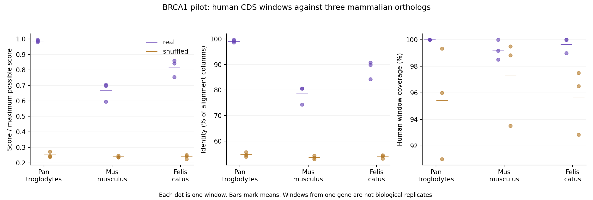
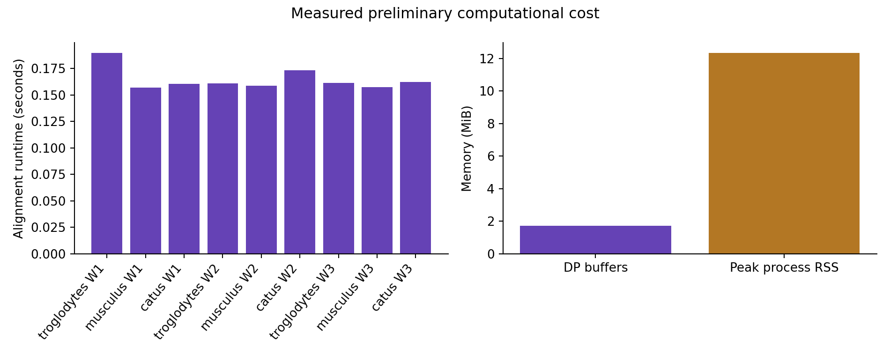

Hypothesis for the broader study: more closely related species will tend to have higher BRCA1 sequence similarity to human under fixed alignment scoring. This pilot compares three mammalian orthologs using Smith–Waterman implemented from scratch.
| Species | RefSeq transcript | NCBI Gene | Full CDS bases |
|---|---|---|---|
| Homo sapiens | NM_007294.4 | 672 | 5,592 |
| Pan troglodytes | NM_001045493.1 | 449497 | 5,592 |
| Mus musculus | NM_009764.3 | 12189 | 5,439 |
| Felis catus | XM_019817933.3 | 101081937 | 5,622 |
The pilot uses the first 3 non-overlapping 600-base windows from each CDS. Same-offset windows can miss homologous regions shifted by insertions or deletions. Broader biological conclusions need full-length alignment and more orthologs.

| Species vs human | Mean score | Mean identity | Mean human window coverage |
|---|---|---|---|
| Pan troglodytes | 1185.0 | 99.2% | 100.0% |
| Mus musculus | 798.7 | 78.5% | 99.2% |
| Felis catus | 983.0 | 88.3% | 99.7% |
Identity is matches divided by all alignment columns, including gaps. Coverage is the consumed portion of the input window. Shuffled controls preserve each target window's base composition, with seed 691. One shuffle per window provides a demonstration control. These observations do not estimate an evolutionary distance or statistical significance.
18 alignments (9 real and 9 shuffled), 7,200 unique real input bases, 6,480,000 DP cells. Alignment runtime 2.885 seconds. Peak process memory 12.35 MiB. Measurements come from Linux-6.18.57-x86_64-with-glibc2.41, Python 3.12.14. Download and plotting are excluded.

Download all observations (CSV) · Benchmark metadata · Traceback alignments
From the project directory run python3 demo.py. For a hand-checkable example run python3 demo.py --query TTACGTAA --target GGACGTCC.